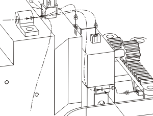

Re-route the last path you created so that it passes through the clamp.

This clamp must have an RCP on it so that it will be included in your formboard.
Use the Subdivide Segment command to add an RCP at the clamp's fixture port.
If you are working on your own version of the part, make ***_car_wiring_assy the Work Part, and then save it and the harness.
Close the assembly.